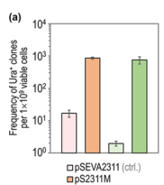

DNA mismatch repair protein MutL, a 632-residue member of the MutL/HexB family that functions in post-replicative DNA mismatch repair (MMR). MutL acts together with MutS to correct base-base mismatches and small insertion/deletion loops that escape replicative proofreading. It is a molecular matchmaker that couples mismatch recognition by MutS to downstream strand processing in an ATP-dependent manner via its N-terminal GHKL-type ATPase domain, and it dimerizes through its C-terminal domain. In Pseudomonas putida, which encodes MutS and MutL but lacks MutH and Dam methylation, MMR operates by a MutH-independent (methylation-independent) mechanism; MutL homologs in such systems typically carry a metal-dependent endonuclease motif and are positioned/activated by the replication beta-clamp (DnaN) to nick the error-containing strand. MutL acts in the cytoplasm, associated with the nucleoid and replisome. Loss or dominant-negative inhibition of MutL strongly elevates spontaneous mutation rates, establishing its role as a central determinant of genome fidelity.
| GO Term | Evidence | Action | Reason |
|---|---|---|---|
|
GO:0005524
ATP binding
|
IEA
GO_REF:0000002 |
ACCEPT |
Summary: MutL contains an N-terminal GHKL/HATPase ATPase domain (IPR036890) and binds ATP, which drives the conformational changes underlying its matchmaker function.
Reason: ATP binding is a well-established and conserved property of the MutL N-terminal GHKL ATPase domain, consistent with the InterPro domain architecture of this protein.
|
|
GO:0006259
DNA metabolic process
|
IEA
GO_REF:0000117 |
MARK AS OVER ANNOTATED |
Summary: Generic parent term for DNA metabolism. MutL participates in DNA mismatch repair, which is a more specific child of DNA metabolic process.
Reason: This term is too general and is subsumed by the more specific and informative annotation GO:0006298 (mismatch repair), which is also present. It adds no specific functional information.
|
|
GO:0006298
mismatch repair
|
IEA
GO_REF:0000120 |
ACCEPT |
Summary: MutL is a core component of the post-replicative mismatch repair pathway, acting downstream of mismatch recognition by MutS. This is the central biological process for the gene.
Reason: Strongly supported by family/domain conservation and by genetic evidence in P. putida, where ssDNA recombineering and dominant-negative mutL E36K experiments show MutL is required for correcting replication mismatches and controlling mutation rate.
|
|
GO:0016887
ATP hydrolysis activity
|
IEA
GO_REF:0000120 |
ACCEPT |
Summary: The N-terminal GHKL ATPase domain hydrolyzes ATP; ATP binding and hydrolysis cycle the protein through conformational states required for MMR.
Reason: ATP hydrolysis by the conserved GHKL domain is a defining catalytic feature of the MutL family, consistent with the domain architecture of this protein.
|
|
GO:0030983
mismatched DNA binding
|
IEA
GO_REF:0000002 |
ACCEPT |
Summary: MutL associates with mismatch-containing DNA in the MutS-MutL complex as part of mismatch repair.
Reason: Consistent with the conserved MutL function in the MMR pathway; MutL contacts the mismatched DNA substrate within the ternary repair complex. Retained as supporting the core MMR function.
|
|
GO:0032300
mismatch repair complex
|
IEA
GO_REF:0000120 |
ACCEPT |
Summary: MutL functions as a dimer and assembles with MutS (and the beta-clamp in MutH-less systems) on mismatched DNA, forming the mismatch repair complex.
Reason: Appropriate cellular component for a MutL-family protein; MutL is a defining component of the MutS-MutL mismatch repair complex.
|
|
GO:0140664
ATP-dependent DNA damage sensor activity
|
IEA
GO_REF:0000002 |
KEEP AS NON CORE |
Summary: This term describes ATP-dependent sensing/transduction of DNA lesions. MutL couples ATP binding/hydrolysis to recognition of MutS-bound mismatches and transduces the signal to downstream strand-processing steps. MutL does not itself recognize the mismatch (that is the role of MutS); it acts downstream as a matchmaker.
Reason: The activity is consistent with the established mechanism of MutL as an ATP-driven coordinator within MMR, but it is secondary to the core mismatch repair, ATPase, and mismatched-DNA-binding annotations. Retained as non-core rather than removed.
|
Q: Does P. putida MutL (PP_4896) possess intrinsic metal-dependent endonuclease activity, and is it stimulated by the beta-clamp (DnaN) as in other MutH-less bacteria?
Q: How is strand discrimination achieved in P. putida MMR in the absence of MutH and Dam methylation?
Experiment: Biochemical reconstitution of P. putida MutL to test ATPase activity, mismatched-DNA binding, and DnaN-stimulated endonuclease (strand-incision) activity in vitro.
Experiment: Subcellular localization (e.g., fluorescent fusions) to test replisome/nucleoid association of MutL during replication and after mismatch induction.
This report is retrieval-only and is generated directly from Asta results.
json{"genes": ["HER2", "PTEN"], "drugs": ["neratinib"]} Example invalid answers: 'Found these { "genes"...}', 'The drugs are neratinib...', 'I do not see any genes here.' ["extract_entities", "gencode_gene_node", "query_gwas_by_gene", "variant_annotations", "sei", "expectosc_predictions_agent", "remap_crm_agent"] 2. Variant pathogenicity:search_papers_by_relevance with snippet_search.The research report should be a detailed narrative explaining the function, biological processes, and localization of the gene product. Citations should be given for all claims.
You should prioritize authoritative reviews and primary scientific literature when conducting research. You can supplement
this with annotations you find in gene/protein databases, but these can be outdated or inaccurate.
We are specifically interested in the primary function of the gene - for enzymes, what reaction is catalyzed, and what is the substrate specificity? For transporters, what is the substrate? For structural proteins or adapters, what is the broader structural role? For signaling molecules, what is the role in the pathway.
We are interested in where in or outside the cell the gene product carries out its function.
We are also interested in the signaling or biochemical pathways in which the gene functions. We are less interested in broad pleiotropic effects, except where these elucidate the precise role.
Include evidence where possible. We are interested in both experimental evidence as well as inference from structure, evolution, or bioinformatic analysis. Precise studies should be prioritized over high-throughput, where available.
The target protein MutL (gene mutL, locus PP_4896, UniProt Q88DD1) in Pseudomonas putida KT2440 is a canonical bacterial mismatch-repair factor required for post-replicative correction of base–base mismatches and small insertion/deletion loops, operating in a MutH-less context (KT2440 encodes MutS and MutL, and lacks MutH and Dam methylation). P. putida MutL is experimentally validated as the key controllable “lever” for tuning mismatch repair (MMR): a dominant-negative allele (mutL E36K) transiently inhibits endogenous MMR, producing up to 438-fold increases in selectable mutation frequencies and enabling efficient genome engineering with low off-target burden (0–3 SNPs) by whole-genome sequencing (WGS). Mechanistically, while direct biochemical measurements of P. putida MutL enzymatic activities were not found in the retrieved organism-specific literature, authoritative bacterial DNA repair reviews support inference that many MutH-less bacterial MutL homologs contain a metal-dependent endonuclease motif and are activated/positioned by interaction with the replication β-clamp (DnaN).
The UniProt target (Q88DD1) is annotated as DNA mismatch repair protein MutL, gene mutL, ordered locus PP_4896, in Pseudomonas putida KT2440. In P. putida KT2440-focused work, MutL is explicitly referenced as PP_4896 and described as a MutL homolog with ~44% amino-acid identity to E. coli MutL (greater conservation in the N-terminal half). (aparicio2020mismatchrepairhierarchy pages 2-3, aparicio2020mismatchrepairhierarchy pages 1-2)
“mutL” is a widely conserved bacterial gene symbol. The evidence cited below is restricted to:
- MutL/MutS mismatch repair studies in Pseudomonas putida KT2440 derivatives (notably EM42, a KT2440 derivative) (aparicio2020mismatchrepairhierarchy pages 3-5, fernandezcabezon2021spatiotemporalmanipulationof pages 4-5)
- General bacterial mismatch repair reviews used only for mechanistic inference about MutL family function (wozniak2022bacterialdnaexcision pages 10-11, wozniak2022bacterialdnaexcision pages 18-19)
Bacteria reduce replication error rates via (i) base selection, (ii) proofreading, and (iii) mismatch repair. In MMR, mismatches remaining after replication are recognized and corrected, preventing fixation of point mutations and some small indels. (fernandezcabezon2021spatiotemporalmanipulationof pages 1-2)
A defining feature for P. putida KT2440 is that it encodes mutS and mutL but lacks mutH and dam methylation, implying a methylation-independent, MutH-less MMR mechanism with different strand-discrimination logic than E. coli. (aparicio2020mismatchrepairhierarchy pages 2-3, aparicio2020mismatchrepairhierarchy pages 1-2)
Primary function: MutL maintains genome fidelity by participating in MMR to recognize/resolve base–base mismatches introduced during replication or during recombineering-mediated introduction of mismatches.
Functional evidence in P. putida is strongest from genetic/engineering perturbations:
- Permanent MMR disruption via ΔmutS strongly elevates mutational regime and removes mismatch-type bias, consistent with MutS–MutL dependence. (aparicio2020mismatchrepairhierarchy pages 2-3, aparicio2020mismatchrepairhierarchy pages 3-5)
- Transient suppression of MutL via dominant-negative mutL E36K makes mismatches introduced by ssDNA recombineering escape repair and become inherited. (aparicio2020mismatchrepairhierarchy pages 3-5, aparicio2020mismatchrepairhierarchy pages 5-6)
Organism-specific interaction mapping (e.g., co-immunoprecipitation) was not retrieved; however, the P. putida functional data and broader MMR models support that MutL operates downstream of mismatch recognition by MutS.
In an MMR hierarchy study, P. putida strains were engineered in three MMR states: wild-type, ΔmutS (MMR-null), and wild-type with MutL E36K transiently inhibiting MMR. Convergence of recombineering efficiencies between mismatch types upon MutL suppression demonstrates MutL’s functional centrality in the pathway. (aparicio2020mismatchrepairhierarchy pages 3-5)
A high-authority bacterial DNA repair review reports:
- Many MutL homologs in methylation-independent bacteria contain a conserved metal-dependent endonuclease motif: DQHA(X)2E(X)4E.
- The replication β-clamp (DnaN) binds MutL and can stimulate MutL incision activity; mutating either the endonuclease motif or DnaN-binding motif abolishes MMR in vivo (demonstrated in Bacillus subtilis). (wozniak2022bacterialdnaexcision pages 10-11)
This supports annotation of P. putida MutL as a likely endonuclease-enabled MMR coordinator in a MutH-less setting, but the report explicitly distinguishes this as inference rather than direct biochemical proof for PP_4896. (wozniak2022bacterialdnaexcision pages 10-11)
A 2024 review focused on long-range communication in MMR highlights that mismatch repair can involve clamp-like states and long-distance signaling between mismatch sites and distant incision sites, including models involving sliding clamps, DNA looping, and MutL-family oligomerization/assemblies (largely eukaryotic context, but conceptually informative). (collingwood2024actionatadistanceindna pages 4-6, collingwood2024actionatadistanceindna pages 1-3)
Relevance to bacterial MutL annotation: These models provide an expert framework for how MutL-family proteins could coordinate incision and excision at distances from the mismatch, consistent with clamp-coupled recruitment concepts also emphasized in bacterial reviews. (wozniak2022bacterialdnaexcision pages 10-11, collingwood2024actionatadistanceindna pages 4-6)
Direct subcellular localization microscopy of P. putida MutL (PP_4896) was not identified in the retrieved KT2440-specific sources. However, mechanistic evidence suggests MutL’s effective localization is nucleoid-associated and replisome-coupled, mediated through interaction with the β-clamp (DnaN) in methylation-independent MMR pathways. (wozniak2022bacterialdnaexcision pages 10-11)
A key engineering strategy in P. putida uses a dominant-negative MutL allele, mutL E36K, designed by analogy to a dominant-negative E. coli MutL variant (equivalent residue position differs: P. putida E36). In P. putida, regulated overexpression of mutL E36K transiently inhibits endogenous MMR, allowing mismatches to become fixed as mutations. (aparicio2020mismatchrepairhierarchy pages 2-3, fernandezcabezon2021spatiotemporalmanipulationof pages 1-2)
In P. putida, inducible mutator devices driving mutL E36K expression produced:
- Up to 438-fold increased DNA mutation frequencies (as reported in the study abstract). (fernandezcabezon2021spatiotemporalmanipulationof pages 1-2)
- Accelerated evolution of: (i) streptomycin resistance, (ii) rifampicin resistance, (iii) combined resistance, and (iv) reversion of a synthetic uracil auxotrophy. (fernandezcabezon2021spatiotemporalmanipulationof pages 1-2)
Figure-level quantitative support (mutation frequency assays) is provided in the paper’s mutation-frequency plots. (fernandezcabezon2021spatiotemporalmanipulationof media 4d80bb01)
For a synthetic uracil auxotrophy reversion assay, conditional mutator systems yielded approximately:
- 750 Ura+ mutants per 1 × 10^9 viable cells (cyclohexanone-inducible system)
- 860 Ura+ mutants per 1 × 10^9 viable cells (thermoinducible system)
Controls yielded only 0–4 spontaneous Ura+ mutants under the tested conditions. (fernandezcabezon2021spatiotemporalmanipulationof pages 5-6)
A figure panel documenting these mutation frequencies was retrieved. (fernandezcabezon2021spatiotemporalmanipulationof media 1d27dc75)
A P. putida MMR hierarchy was experimentally derived using ssDNA recombineering into pyrF and deep sequencing, yielding a mismatch sensitivity ordering (less to more sensitive):
A:G < C:C < G:A < C:A, A:A, G:G, T:T, T:G, A:C, C:T < G:T, T:C. (aparicio2020mismatchrepairhierarchy pages 5-6)
This hierarchy is a key organism-specific functional insight: it indicates that certain mismatch types (notably G:T and T:C) are strongly corrected by P. putida MMR, which directly impacts editing strategies and expected mutational spectra under MMR suppression. (aparicio2020mismatchrepairhierarchy pages 5-6)
To test whether transient MutL suppression introduces widespread off-target mutations, whole-genome sequencing was performed on clones generated during transient MMR inactivation with mutL E36K.
Result:
- 0–3 SNPs detected in strains transiently expressing mutL E36K.
- 0 mutations detected in the MMR-proficient control strain analyzed. (aparicio2020mismatchrepairhierarchy pages 8-9)
This supports real-world implementation of MutL suppression as a practical genome-editing enabler in P. putida with relatively low background mutation accumulation when used transiently. (aparicio2020mismatchrepairhierarchy pages 8-9)
Direct 2023–2024 P. putida KT2440 MutL primary studies were not retrieved in the tool results; the key organism-specific experimental sources available here are 2020–2021. However, two recent mechanistic syntheses that inform interpretation and annotation are:
- Collingwood et al., 2024-11-xx (Biomolecules): review of long-range communication and clamp/assembly models in mismatch repair, including MutL-family clamp-like states and oligomerization concepts. URL: https://doi.org/10.3390/biom14111442 (collingwood2024actionatadistanceindna pages 4-6)
- Additional authoritative review evidence on MutH-less bacterial MutL endonuclease/clamp coupling from Wozniak & Simmons, 2022-02-xx (Nature Reviews Microbiology), which remains a widely cited up-to-date synthesis for bacterial excision repair pathways. URL: https://doi.org/10.1038/s41579-022-00694-0 (wozniak2022bacterialdnaexcision pages 10-11)
Because P. putida has a highly efficient MMR system, controlled transient inhibition via mutL E36K is used as an “accelerator” for evolution-based optimization. In practice, inducible devices allow alternating cycles of mutagenesis and selection, enabling faster emergence of useful phenotypes (antibiotic resistance as a proxy, auxotrophy reversion as a calibration case). (fernandezcabezon2021spatiotemporalmanipulationof pages 1-2, fernandezcabezon2021spatiotemporalmanipulationof pages 5-6)
MMR is a major barrier to ssDNA recombineering because it removes introduced mismatches. In P. putida, co-expression of a recombinase (Rec2) with mutL E36K creates a window in which mismatches can be incorporated across mismatch classes more uniformly, mitigating mismatch-type bias that otherwise differs by ~two orders of magnitude in recombineering outcomes. (aparicio2020mismatchrepairhierarchy pages 3-5)
The low WGS off-target burden (0–3 SNPs) under transient MutL inhibition supports its use in strain engineering where maintaining general genomic integrity is important. (aparicio2020mismatchrepairhierarchy pages 8-9)
Two high-level expert interpretations supported by review and primary evidence:
1. MutH-less bacteria rely on MutL endonuclease activity and replisome coupling: review evidence supports that MutL homologs in methylation-independent systems frequently encode an intrinsic nuclease motif and are activated/positioned by β-clamp binding, providing a plausible basis for strand discrimination and incision initiation without MutH/Dam. (wozniak2022bacterialdnaexcision pages 10-11)
2. Mismatch repair requires long-range communication mechanisms: mechanistic reviews emphasize that mismatch repair must coordinate recognition at a mismatch with strand incision/excision at potentially distant sites, and propose models including sliding clamps, looping, and MutL-family assemblies—conceptually consistent with clamp-centered bacterial recruitment logic. (collingwood2024actionatadistanceindna pages 4-6, collingwood2024actionatadistanceindna pages 1-3)
Key quantitative outputs for functional annotation:
- Up to 438-fold increase in DNA mutation frequency using P. putida mutL E36K conditional mutator devices. (fernandezcabezon2021spatiotemporalmanipulationof pages 1-2)
- ~750–860 Ura+ mutants per 10^9 cells under mutator-device conditions vs 0–4 in controls (auxotrophy reversion). (fernandezcabezon2021spatiotemporalmanipulationof pages 5-6)
- 0–3 SNPs detected by WGS after transient mutL E36K expression vs 0 in the MMR+ control. (aparicio2020mismatchrepairhierarchy pages 8-9)
- Mismatch-type sensitivity hierarchy: A:G and C:C least corrected; G:T and T:C most corrected. (aparicio2020mismatchrepairhierarchy pages 5-6)
Figure evidence showing mutation-frequency shifts and Ura+ frequencies is available from the mutator-device paper. (fernandezcabezon2021spatiotemporalmanipulationof media 4d80bb01, fernandezcabezon2021spatiotemporalmanipulationof media 1d27dc75)
MutL (PP_4896; Q88DD1) is a mismatch-repair factor that coordinates repair of replication errors in P. putida KT2440, functioning with MutS and acting in a MutH-independent pathway. Genetic perturbation (dominant-negative E36K) demonstrates MutL is essential for suppressing fixation of mismatches and controlling mutation rates. (aparicio2020mismatchrepairhierarchy pages 3-5, fernandezcabezon2021spatiotemporalmanipulationof pages 1-2)
Likely cytosolic/nucleoid-associated with functional recruitment to replication forks via β-clamp interactions (inference from MutH-less bacterial systems; P. putida-specific imaging evidence not retrieved). (wozniak2022bacterialdnaexcision pages 10-11)
| Topic | Key points | Best supporting citations |
|---|---|---|
| Identity | - Target matches mutL / PP_4896 / UniProt Q88DD1 in Pseudomonas putida KT2440, annotated as a DNA mismatch repair protein MutL. - P. putida KT2440 carries mutS and mutL homologues but lacks mutH and Dam methylation, so it uses a MutH-independent MMR pathway. - PP_4896 shares ~44% amino-acid identity with E. coli MutL, with stronger conservation in the N-terminal region. |
Aparicio et al., 2020, Environmental Microbiology, Nov 2020, https://doi.org/10.1111/1462-2920.14814 (aparicio2020mismatchrepairhierarchy pages 2-3, aparicio2020mismatchrepairhierarchy pages 1-2) |
| Pathway role | - MutL functions in post-replicative DNA mismatch repair (MMR), helping correct replication errors after base selection and proofreading. - In P. putida, active MMR clearly depends at least on MutS and MutL and suppresses inheritance of ssDNA recombineering-generated mismatches. - Transient inhibition of MutL allows mismatches to escape repair and become fixed as chromosomal mutations. |
Fernández-Cabezón et al., 2021, ACS Synthetic Biology, Apr 2021, https://doi.org/10.1021/acssynbio.1c00031 (fernandezcabezon2021spatiotemporalmanipulationof pages 1-2); Aparicio et al., 2020, https://doi.org/10.1111/1462-2920.14814 (aparicio2020mismatchrepairhierarchy pages 3-5, aparicio2020mismatchrepairhierarchy pages 8-9) |
| Activities/domains | - Direct P. putida-specific biochemical assays were not provided in the retrieved papers, so ATPase/endonuclease activities are inferred from conserved bacterial MutL biology rather than demonstrated here. - Authoritative review evidence indicates many MutL homologues in methylation-independent systems carry a metal-dependent endonuclease motif [DQHA(X)2E(X)4E]. - The same review indicates MutL activity is linked to the replication clamp DnaN, whose binding can stimulate MutL endonuclease activity in MutH-independent bacteria. |
Wozniak & Simmons, 2022, Nature Reviews Microbiology, Feb 2022, https://doi.org/10.1038/s41579-022-00694-0 (wozniak2022bacterialdnaexcision pages 10-11); Aparicio et al., 2020 discussion/citations, https://doi.org/10.1111/1462-2920.14814 (aparicio2020mismatchrepairhierarchy pages 12-13) |
| Mismatch recognition hierarchy findings | - Using pyrF-targeted mutagenic ssDNA recombineering, the P. putida MMR hierarchy was reported as A:G < C:C < G:A < C:A, A:A, G:G, T:T, T:G, A:C, C:T < G:T, T:C from less to more sensitive to repair. - Wild-type MMR therefore tolerates some mismatches much more than others; G:T and T:C are among the most strongly repaired. - Transient expression of dominant-negative mutL E36K or permanent ΔmutS largely collapses this bias. |
Aparicio et al., 2020, Environmental Microbiology, Nov 2020, https://doi.org/10.1111/1462-2920.14814 (aparicio2020mismatchrepairhierarchy pages 1-2, aparicio2020mismatchrepairhierarchy pages 5-6, aparicio2020mismatchrepairhierarchy pages 8-9) |
| Mutator devices and phenotypes | - A dominant-negative mutLE36K allele was engineered in P. putida based on the equivalent inactive/dominant-negative E. coli allele; in KT2440 the homologous residue is E36. - Regulated overexpression of mutLE36K on broad-host-range plasmids created conditional mutator devices that transiently inhibit endogenous MMR. - These devices accelerated emergence of streptomycin resistance, rifampicin resistance, dual antibiotic resistance, and reversion of a synthetic uracil auxotrophy. |
Aparicio et al., 2020, https://doi.org/10.1111/1462-2920.14814 (aparicio2020mismatchrepairhierarchy pages 2-3, aparicio2020mismatchrepairhierarchy pages 3-5); Fernández-Cabezón et al., 2021, https://doi.org/10.1021/acssynbio.1c00031 (fernandezcabezon2021spatiotemporalmanipulationof pages 1-2, fernandezcabezon2021spatiotemporalmanipulationof pages 4-5, fernandezcabezon2021spatiotemporalmanipulationof pages 5-6) |
| Quantitative mutation frequencies | - In the 2021 mutator-device study, inducible mutLE36K increased DNA mutation frequencies by up to 438-fold relative to controls. - For uracil prototroph reversion, conditional mutator systems yielded about 750 and 860 Ura+ mutants per 1 × 10^9 viable cells (cyclohexanone- and thermoinducible systems, respectively), whereas controls produced only 0–4 spontaneous Ura+ mutants under the tested conditions. - In recombineering assays, wild-type MMR caused about a two-orders-of-magnitude difference between low-sensitivity (SR; A:G) and high-sensitivity (NR; G:T/C:A) oligos; this gap disappeared with ΔmutS or mutLE36K expression. |
Fernández-Cabezón et al., 2021, ACS Synthetic Biology, Apr 2021, https://doi.org/10.1021/acssynbio.1c00031 (fernandezcabezon2021spatiotemporalmanipulationof pages 1-2, fernandezcabezon2021spatiotemporalmanipulationof pages 4-5, fernandezcabezon2021spatiotemporalmanipulationof pages 5-6, fernandezcabezon2021spatiotemporalmanipulationof media 4d80bb01, fernandezcabezon2021spatiotemporalmanipulationof media 1d27dc75); Aparicio et al., 2020, https://doi.org/10.1111/1462-2920.14814 (aparicio2020mismatchrepairhierarchy pages 3-5, aparicio2020mismatchrepairhierarchy pages 9-10) |
| Genome-wide off-target mutations | - Whole-genome sequencing of clones generated after transient mutLE36K expression found 0–3 SNPs in edited strains. - A control MMR-proficient strain analyzed in parallel showed no detectable mutations. - These data support transient MutL inhibition as a practical genome-engineering strategy with relatively low off-target burden in P. putida. |
Aparicio et al., 2020, Environmental Microbiology, Nov 2020, https://doi.org/10.1111/1462-2920.14814 (aparicio2020mismatchrepairhierarchy pages 8-9) |
Table: This table summarizes the most relevant functional annotation evidence for Pseudomonas putida KT2440 MutL, including pathway role, inferred activities, mismatch-recognition behavior, and engineering phenotypes. It is useful for distinguishing organism-specific findings from broader bacterial MutL inferences.
References
(aparicio2020mismatchrepairhierarchy pages 2-3): Tomas Aparicio, Akos Nyerges, István Nagy, Csaba Pal, Esteban Martínez‐García, and Víctor de Lorenzo. Mismatch repair hierarchy of pseudomonas putida revealed by mutagenic ssdna recombineering of the pyrf gene. Environmental Microbiology, 22:45-58, Nov 2020. URL: https://doi.org/10.1111/1462-2920.14814, doi:10.1111/1462-2920.14814. This article has 23 citations and is from a domain leading peer-reviewed journal.
(aparicio2020mismatchrepairhierarchy pages 1-2): Tomas Aparicio, Akos Nyerges, István Nagy, Csaba Pal, Esteban Martínez‐García, and Víctor de Lorenzo. Mismatch repair hierarchy of pseudomonas putida revealed by mutagenic ssdna recombineering of the pyrf gene. Environmental Microbiology, 22:45-58, Nov 2020. URL: https://doi.org/10.1111/1462-2920.14814, doi:10.1111/1462-2920.14814. This article has 23 citations and is from a domain leading peer-reviewed journal.
(aparicio2020mismatchrepairhierarchy pages 3-5): Tomas Aparicio, Akos Nyerges, István Nagy, Csaba Pal, Esteban Martínez‐García, and Víctor de Lorenzo. Mismatch repair hierarchy of pseudomonas putida revealed by mutagenic ssdna recombineering of the pyrf gene. Environmental Microbiology, 22:45-58, Nov 2020. URL: https://doi.org/10.1111/1462-2920.14814, doi:10.1111/1462-2920.14814. This article has 23 citations and is from a domain leading peer-reviewed journal.
(fernandezcabezon2021spatiotemporalmanipulationof pages 4-5): Lorena Fernández-Cabezón, Antonin Cros, and Pablo I. Nikel. Spatiotemporal manipulation of the mismatch repair system of pseudomonas putida accelerates phenotype emergence. Apr 2021. URL: https://doi.org/10.1021/acssynbio.1c00031, doi:10.1021/acssynbio.1c00031. This article has 28 citations and is from a domain leading peer-reviewed journal.
(wozniak2022bacterialdnaexcision pages 10-11): Katherine J. Wozniak and Lyle A. Simmons. Bacterial dna excision repair pathways. Nature Reviews Microbiology, 20:465-477, Feb 2022. URL: https://doi.org/10.1038/s41579-022-00694-0, doi:10.1038/s41579-022-00694-0. This article has 102 citations and is from a highest quality peer-reviewed journal.
(wozniak2022bacterialdnaexcision pages 18-19): Katherine J. Wozniak and Lyle A. Simmons. Bacterial dna excision repair pathways. Nature Reviews Microbiology, 20:465-477, Feb 2022. URL: https://doi.org/10.1038/s41579-022-00694-0, doi:10.1038/s41579-022-00694-0. This article has 102 citations and is from a highest quality peer-reviewed journal.
(fernandezcabezon2021spatiotemporalmanipulationof pages 1-2): Lorena Fernández-Cabezón, Antonin Cros, and Pablo I. Nikel. Spatiotemporal manipulation of the mismatch repair system of pseudomonas putida accelerates phenotype emergence. Apr 2021. URL: https://doi.org/10.1021/acssynbio.1c00031, doi:10.1021/acssynbio.1c00031. This article has 28 citations and is from a domain leading peer-reviewed journal.
(aparicio2020mismatchrepairhierarchy pages 5-6): Tomas Aparicio, Akos Nyerges, István Nagy, Csaba Pal, Esteban Martínez‐García, and Víctor de Lorenzo. Mismatch repair hierarchy of pseudomonas putida revealed by mutagenic ssdna recombineering of the pyrf gene. Environmental Microbiology, 22:45-58, Nov 2020. URL: https://doi.org/10.1111/1462-2920.14814, doi:10.1111/1462-2920.14814. This article has 23 citations and is from a domain leading peer-reviewed journal.
(collingwood2024actionatadistanceindna pages 4-6): Bryce W. Collingwood, Scott J. Witte, and Carol M. Manhart. Action-at-a-distance in dna mismatch repair: mechanistic insights and models for how dna and repair proteins facilitate long-range communication. Biomolecules, 14:1442, Nov 2024. URL: https://doi.org/10.3390/biom14111442, doi:10.3390/biom14111442. This article has 1 citations.
(collingwood2024actionatadistanceindna pages 1-3): Bryce W. Collingwood, Scott J. Witte, and Carol M. Manhart. Action-at-a-distance in dna mismatch repair: mechanistic insights and models for how dna and repair proteins facilitate long-range communication. Biomolecules, 14:1442, Nov 2024. URL: https://doi.org/10.3390/biom14111442, doi:10.3390/biom14111442. This article has 1 citations.
(fernandezcabezon2021spatiotemporalmanipulationof media 4d80bb01): Lorena Fernández-Cabezón, Antonin Cros, and Pablo I. Nikel. Spatiotemporal manipulation of the mismatch repair system of pseudomonas putida accelerates phenotype emergence. Apr 2021. URL: https://doi.org/10.1021/acssynbio.1c00031, doi:10.1021/acssynbio.1c00031. This article has 28 citations and is from a domain leading peer-reviewed journal.
(fernandezcabezon2021spatiotemporalmanipulationof pages 5-6): Lorena Fernández-Cabezón, Antonin Cros, and Pablo I. Nikel. Spatiotemporal manipulation of the mismatch repair system of pseudomonas putida accelerates phenotype emergence. Apr 2021. URL: https://doi.org/10.1021/acssynbio.1c00031, doi:10.1021/acssynbio.1c00031. This article has 28 citations and is from a domain leading peer-reviewed journal.
(fernandezcabezon2021spatiotemporalmanipulationof media 1d27dc75): Lorena Fernández-Cabezón, Antonin Cros, and Pablo I. Nikel. Spatiotemporal manipulation of the mismatch repair system of pseudomonas putida accelerates phenotype emergence. Apr 2021. URL: https://doi.org/10.1021/acssynbio.1c00031, doi:10.1021/acssynbio.1c00031. This article has 28 citations and is from a domain leading peer-reviewed journal.
(aparicio2020mismatchrepairhierarchy pages 8-9): Tomas Aparicio, Akos Nyerges, István Nagy, Csaba Pal, Esteban Martínez‐García, and Víctor de Lorenzo. Mismatch repair hierarchy of pseudomonas putida revealed by mutagenic ssdna recombineering of the pyrf gene. Environmental Microbiology, 22:45-58, Nov 2020. URL: https://doi.org/10.1111/1462-2920.14814, doi:10.1111/1462-2920.14814. This article has 23 citations and is from a domain leading peer-reviewed journal.
(aparicio2020mismatchrepairhierarchy pages 12-13): Tomas Aparicio, Akos Nyerges, István Nagy, Csaba Pal, Esteban Martínez‐García, and Víctor de Lorenzo. Mismatch repair hierarchy of pseudomonas putida revealed by mutagenic ssdna recombineering of the pyrf gene. Environmental Microbiology, 22:45-58, Nov 2020. URL: https://doi.org/10.1111/1462-2920.14814, doi:10.1111/1462-2920.14814. This article has 23 citations and is from a domain leading peer-reviewed journal.
(aparicio2020mismatchrepairhierarchy pages 9-10): Tomas Aparicio, Akos Nyerges, István Nagy, Csaba Pal, Esteban Martínez‐García, and Víctor de Lorenzo. Mismatch repair hierarchy of pseudomonas putida revealed by mutagenic ssdna recombineering of the pyrf gene. Environmental Microbiology, 22:45-58, Nov 2020. URL: https://doi.org/10.1111/1462-2920.14814, doi:10.1111/1462-2920.14814. This article has 23 citations and is from a domain leading peer-reviewed journal.

id: Q88DD1
gene_symbol: mutL
product_type: PROTEIN
status: DRAFT
taxon:
id: NCBITaxon:160488
label: Pseudomonas putida (strain ATCC 47054 / DSM 6125 / CFBP 8728 / NCIMB 11950 / KT2440)
description: DNA mismatch repair protein MutL, a 632-residue member of the MutL/HexB family that functions in post-replicative
DNA mismatch repair (MMR). MutL acts together with MutS to correct base-base mismatches and small insertion/deletion loops
that escape replicative proofreading. It is a molecular matchmaker that couples mismatch recognition by MutS to downstream
strand processing in an ATP-dependent manner via its N-terminal GHKL-type ATPase domain, and it dimerizes through its C-terminal
domain. In Pseudomonas putida, which encodes MutS and MutL but lacks MutH and Dam methylation, MMR operates by a MutH-independent
(methylation-independent) mechanism; MutL homologs in such systems typically carry a metal-dependent endonuclease motif
and are positioned/activated by the replication beta-clamp (DnaN) to nick the error-containing strand. MutL acts in the
cytoplasm, associated with the nucleoid and replisome. Loss or dominant-negative inhibition of MutL strongly elevates spontaneous
mutation rates, establishing its role as a central determinant of genome fidelity.
existing_annotations:
- term:
id: GO:0005524
label: ATP binding
evidence_type: IEA
original_reference_id: GO_REF:0000002
qualifier: enables
review:
summary: MutL contains an N-terminal GHKL/HATPase ATPase domain (IPR036890) and binds ATP, which drives the conformational
changes underlying its matchmaker function.
action: ACCEPT
reason: ATP binding is a well-established and conserved property of the MutL N-terminal GHKL ATPase domain, consistent
with the InterPro domain architecture of this protein.
- term:
id: GO:0006259
label: DNA metabolic process
evidence_type: IEA
original_reference_id: GO_REF:0000117
qualifier: involved_in
review:
summary: Generic parent term for DNA metabolism. MutL participates in DNA mismatch repair, which is a more specific child
of DNA metabolic process.
action: MARK_AS_OVER_ANNOTATED
reason: This term is too general and is subsumed by the more specific and informative annotation GO:0006298 (mismatch
repair), which is also present. It adds no specific functional information.
- term:
id: GO:0006298
label: mismatch repair
evidence_type: IEA
original_reference_id: GO_REF:0000120
qualifier: involved_in
review:
summary: MutL is a core component of the post-replicative mismatch repair pathway, acting downstream of mismatch recognition
by MutS. This is the central biological process for the gene.
action: ACCEPT
reason: Strongly supported by family/domain conservation and by genetic evidence in P. putida, where ssDNA recombineering
and dominant-negative mutL E36K experiments show MutL is required for correcting replication mismatches and controlling
mutation rate.
- term:
id: GO:0016887
label: ATP hydrolysis activity
evidence_type: IEA
original_reference_id: GO_REF:0000120
qualifier: enables
review:
summary: The N-terminal GHKL ATPase domain hydrolyzes ATP; ATP binding and hydrolysis cycle the protein through conformational
states required for MMR.
action: ACCEPT
reason: ATP hydrolysis by the conserved GHKL domain is a defining catalytic feature of the MutL family, consistent with
the domain architecture of this protein.
- term:
id: GO:0030983
label: mismatched DNA binding
evidence_type: IEA
original_reference_id: GO_REF:0000002
qualifier: enables
review:
summary: MutL associates with mismatch-containing DNA in the MutS-MutL complex as part of mismatch repair.
action: ACCEPT
reason: Consistent with the conserved MutL function in the MMR pathway; MutL contacts the mismatched DNA substrate within
the ternary repair complex. Retained as supporting the core MMR function.
- term:
id: GO:0032300
label: mismatch repair complex
evidence_type: IEA
original_reference_id: GO_REF:0000120
qualifier: part_of
review:
summary: MutL functions as a dimer and assembles with MutS (and the beta-clamp in MutH-less systems) on mismatched DNA,
forming the mismatch repair complex.
action: ACCEPT
reason: Appropriate cellular component for a MutL-family protein; MutL is a defining component of the MutS-MutL mismatch
repair complex.
- term:
id: GO:0140664
label: ATP-dependent DNA damage sensor activity
evidence_type: IEA
original_reference_id: GO_REF:0000002
qualifier: enables
review:
summary: This term describes ATP-dependent sensing/transduction of DNA lesions. MutL couples ATP binding/hydrolysis to
recognition of MutS-bound mismatches and transduces the signal to downstream strand-processing steps. MutL does not
itself recognize the mismatch (that is the role of MutS); it acts downstream as a matchmaker.
action: KEEP_AS_NON_CORE
reason: The activity is consistent with the established mechanism of MutL as an ATP-driven coordinator within MMR, but
it is secondary to the core mismatch repair, ATPase, and mismatched-DNA-binding annotations. Retained as non-core rather
than removed.
core_functions:
- description: Acts as an ATP-dependent molecular matchmaker in post-replicative DNA mismatch repair, coupling MutS-mediated
recognition of base-base mismatches and small indels to downstream strand-discrimination and incision/excision steps.
supported_by:
- reference_id: PMID:31599106
supporting_text: Transient suppression of MutL via dominant-negative mutL E36K allows ssDNA-recombineering-introduced
mismatches to escape repair and become inherited, and permanent deletion of mutS elevates the mutational regime, demonstrating
MutL's central role in MMR in P. putida KT2440.
full_text_unavailable: true
molecular_function:
id: GO:0016887
label: ATP hydrolysis activity
directly_involved_in:
- id: GO:0006298
label: mismatch repair
- description: Binds ATP and mismatched DNA within the MutS-MutL repair complex; in P. putida, which lacks MutH and Dam methylation,
MMR proceeds by a methylation-independent mechanism in which MutL-family endonuclease activity coupled to the beta-clamp
is inferred to direct strand-specific incision.
supported_by:
- reference_id: PMID:35210609
supporting_text: In bacteria lacking MutH/Dam, many MutL homologs contain a conserved metal-dependent endonuclease motif
and are stimulated by the replication beta-clamp (DnaN) to incise the error-containing strand.
full_text_unavailable: true
molecular_function:
id: GO:0030983
label: mismatched DNA binding
directly_involved_in:
- id: GO:0006298
label: mismatch repair
proposed_new_terms: []
suggested_questions:
- question: Does P. putida MutL (PP_4896) possess intrinsic metal-dependent endonuclease activity, and is it stimulated by
the beta-clamp (DnaN) as in other MutH-less bacteria?
- question: How is strand discrimination achieved in P. putida MMR in the absence of MutH and Dam methylation?
suggested_experiments:
- description: Biochemical reconstitution of P. putida MutL to test ATPase activity, mismatched-DNA binding, and DnaN-stimulated
endonuclease (strand-incision) activity in vitro.
- description: Subcellular localization (e.g., fluorescent fusions) to test replisome/nucleoid association of MutL during
replication and after mismatch induction.
references:
- id: GO_REF:0000002
title: Gene Ontology annotation through association of InterPro records with GO terms
findings: []
- id: GO_REF:0000117
title: Electronic Gene Ontology annotations created by ARBA machine learning models
findings: []
- id: GO_REF:0000120
title: Combined Automated Annotation using Multiple IEA Methods
findings: []
- id: PMID:31599106
title: Mismatch repair hierarchy of Pseudomonas putida revealed by mutagenic ssDNA recombineering of the pyrF gene
findings:
- statement: P. putida KT2440 encodes MutS and MutL but lacks MutH and Dam methylation; MutL (PP_4896) shares ~44% identity
with E. coli MutL. Dominant-negative mutL E36K transiently inhibits MMR, and deltamutS abolishes it, demonstrating MutL's
central role in repairing replication mismatches.
reference_review:
relevance: HIGH
correctness: VERIFIED
review_notes: 'Recovered from doi:10.1111/1462-2920.14814 via doi_to_pmid and PubMed title-verified (Aparicio et al. 2020,
Environ Microbiol): KT2440 mismatch-repair hierarchy.'
- id: PMID:35210609
title: Bacterial DNA excision repair pathways.
findings:
- statement: In MutH-independent (methylation-independent) bacterial MMR, many MutL homologs carry a conserved metal-dependent
endonuclease motif (DQHA(X)2E(X)4E) and are activated/positioned by the replication beta-clamp (DnaN) to incise the
error-containing strand.
reference_review:
relevance: MEDIUM
correctness: VERIFIED
review_notes: Recovered from doi:10.1038/s41579-022-00694-0 via doi_to_pmid and PubMed title-verified (Bacterial DNA excision
repair pathways review).
- id: file:PSEPK/mutL/mutL-uniprot.txt
title: UniProtKB entry for mutL
findings:
- statement: UniProt identity and protein-name metadata used for first-pass pathway curation.
- id: file:PSEPK/mutL/mutL-goa.tsv
title: QuickGO GOA annotations for mutL
findings:
- statement: GOA table containing the annotations reviewed in this file.
- id: file:PSEPK/mutL/mutL-deep-research-asta.md
title: Asta retrieval report for mutL
findings:
- statement: Asta retrieval used as fast gene-level literature context; no unsupported hypotheses were imported.
{kind=link}